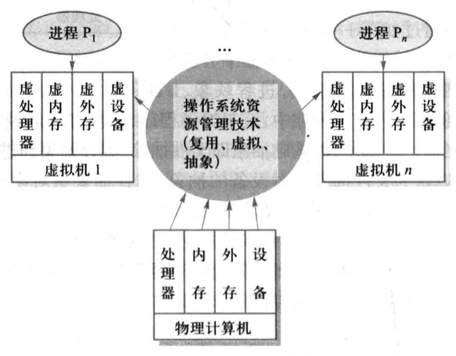
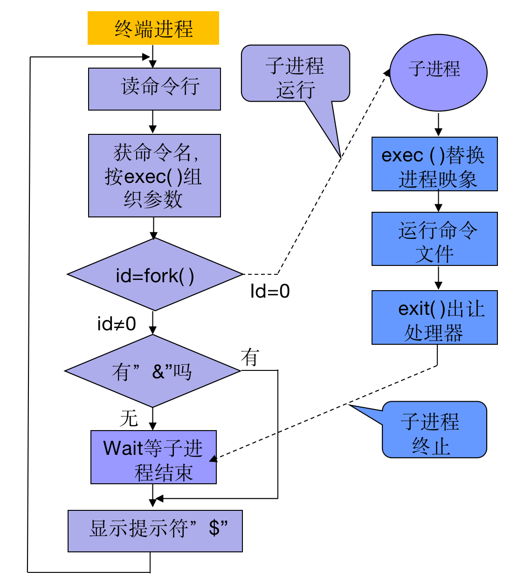
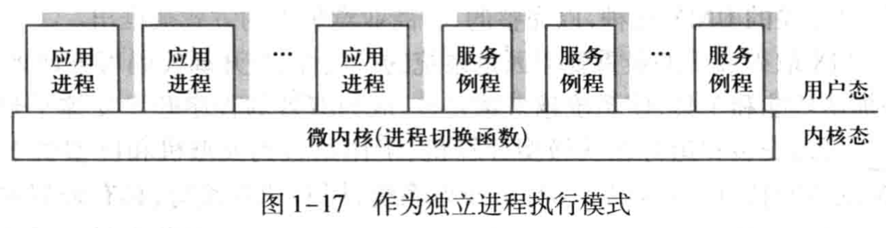

<!DOCTYPE html>
<html>
<head><meta name="generator" content="Hexo 3.8.0">
  <!-- hexo-inject:begin --><!-- hexo-inject:end --><meta charset="utf-8">
  

  
  <title>OS--操作系统概论 | DongXuehui&#39;s Blog</title>
  <meta name="viewport" content="width=device-width, initial-scale=1, maximum-scale=1">
  <meta name="description" content="Operating System—操作系统概论知识要点：  操作系统的定义 操作系统资源管理技术：复用，虚拟，抽象 抽象：三个基本抽象—进程，虚存，文件 虚拟：虚拟机 复用：多道程序设计  了解：  操作系统的历史，分类，常见的操作系统 操作系统接口，操作系统服务   一、计算机系统的软硬件层次结构 硬件层 系统软件（操作系统）层 将硬件封装，调度分配资源，存取保护信息，协调控制并发等 隔离硬件&amp;">
<meta name="keywords" content="操作系统">
<meta property="og:type" content="article">
<meta property="og:title" content="OS--操作系统概论">
<meta property="og:url" content="http://dongxh.cn/2020/03/27/OS-操作系统概论/index.html">
<meta property="og:site_name" content="DongXuehui&#39;s Blog">
<meta property="og:description" content="Operating System—操作系统概论知识要点：  操作系统的定义 操作系统资源管理技术：复用，虚拟，抽象 抽象：三个基本抽象—进程，虚存，文件 虚拟：虚拟机 复用：多道程序设计  了解：  操作系统的历史，分类，常见的操作系统 操作系统接口，操作系统服务   一、计算机系统的软硬件层次结构 硬件层 系统软件（操作系统）层 将硬件封装，调度分配资源，存取保护信息，协调控制并发等 隔离硬件&amp;">
<meta property="og:locale" content="zh-CN">
<meta property="og:image" content="http://dongxh.cn/2020/03/27/OS-操作系统概论/5.png">
<meta property="og:image" content="http://dongxh.cn/2020/03/27/OS-操作系统概论/1.png">
<meta property="og:image" content="http://dongxh.cn/2020/03/27/OS-操作系统概论/2.png">
<meta property="og:image" content="http://dongxh.cn/2020/03/27/OS-操作系统概论/3.png">
<meta property="og:image" content="http://dongxh.cn/2020/03/27/OS-操作系统概论/4.png">
<meta property="og:image" content="http://dongxh.cn/2020/03/27/OS-操作系统概论/6.png">
<meta property="og:image" content="http://dongxh.cn/2020/03/27/OS-操作系统概论/7.png">
<meta property="og:image" content="http://dongxh.cn/2020/03/27/OS-操作系统概论/8.png">
<meta property="og:image" content="http://dongxh.cn/2020/03/27/OS-操作系统概论/9.png">
<meta property="og:image" content="http://dongxh.cn/2020/03/27/OS-操作系统概论/10.png">
<meta property="og:image" content="http://dongxh.cn/2020/03/27/OS-操作系统概论/11.png">
<meta property="og:image" content="http://dongxh.cn/2020/03/27/OS-操作系统概论/12.png">
<meta property="og:image" content="http://dongxh.cn/2020/03/27/OS-操作系统概论/13.png">
<meta property="og:image" content="http://dongxh.cn/2020/03/27/OS-操作系统概论/14.png">
<meta property="og:image" content="http://dongxh.cn/2020/03/27/OS-操作系统概论/15.png">
<meta property="og:image" content="http://dongxh.cn/2020/03/27/OS-操作系统概论/18.png">
<meta property="og:image" content="http://dongxh.cn/2020/03/27/OS-操作系统概论/16.png">
<meta property="og:image" content="http://dongxh.cn/2020/03/27/OS-操作系统概论/17.png">
<meta property="og:image" content="http://dongxh.cn/2020/03/27/OS-操作系统概论/19.png">
<meta property="og:image" content="http://dongxh.cn/2020/03/27/OS-操作系统概论/20.png">
<meta property="og:image" content="http://dongxh.cn/2020/03/27/OS-操作系统概论/21.png">
<meta property="og:image" content="http://dongxh.cn/2020/03/27/OS-操作系统概论/22.png">
<meta property="og:image" content="http://dongxh.cn/2020/03/27/OS-操作系统概论/23.png">
<meta property="og:updated_time" content="2020-03-27T14:29:00.059Z">
<meta name="twitter:card" content="summary">
<meta name="twitter:title" content="OS--操作系统概论">
<meta name="twitter:description" content="Operating System—操作系统概论知识要点：  操作系统的定义 操作系统资源管理技术：复用，虚拟，抽象 抽象：三个基本抽象—进程，虚存，文件 虚拟：虚拟机 复用：多道程序设计  了解：  操作系统的历史，分类，常见的操作系统 操作系统接口，操作系统服务   一、计算机系统的软硬件层次结构 硬件层 系统软件（操作系统）层 将硬件封装，调度分配资源，存取保护信息，协调控制并发等 隔离硬件&amp;">
<meta name="twitter:image" content="http://dongxh.cn/2020/03/27/OS-操作系统概论/5.png">
  
    <link rel="alternate" href="/atom.xml" title="DongXuehui&#39;s Blog" type="application/atom+xml">
  
  
    <link rel="icon" href="/favicon.png">
  
  
    <link href="//fonts.googleapis.com/css?family=Source+Code+Pro" rel="stylesheet" type="text/css">
  
  <link rel="stylesheet" href="/css/style.css"><!-- hexo-inject:begin --><!-- hexo-inject:end -->
</head>
</html>
<body>
  <!-- hexo-inject:begin --><!-- hexo-inject:end --><div id="container">
    <div id="wrap">
      <header id="header">
  <div id="banner"></div>
  <div id="header-outer" class="outer">
    <div id="header-title" class="inner">
      <h1 id="logo-wrap">
        <a href="/" id="logo">DongXuehui&#39;s Blog</a>
      </h1>
      
    </div>
    <div id="header-inner" class="inner">
      <nav id="main-nav">
        <a id="main-nav-toggle" class="nav-icon"></a>
        
          <a class="main-nav-link" href="/">Home</a>
        
          <a class="main-nav-link" href="/archives">Archives</a>
        
      </nav>
      <nav id="sub-nav">
        
          <a id="nav-rss-link" class="nav-icon" href="/atom.xml" title="RSS Feed"></a>
        
        <a id="nav-search-btn" class="nav-icon" title="搜索"></a>
      </nav>
      <div id="search-form-wrap">
        <form action="//google.com/search" method="get" accept-charset="UTF-8" class="search-form"><input type="search" name="q" class="search-form-input" placeholder="Search"><button type="submit" class="search-form-submit">&#xF002;</button><input type="hidden" name="sitesearch" value="http://dongxh.cn"></form>
      </div>
    </div>
  </div>
</header>
      <div class="outer">
        <section id="main"><article id="post-OS-操作系统概论" class="article article-type-post" itemscope itemprop="blogPost">
  <div class="article-meta">
    <a href="/2020/03/27/OS-操作系统概论/" class="article-date">
  <time datetime="2020-03-27T14:15:32.000Z" itemprop="datePublished">2020-03-27</time>
</a>
    
  </div>
  <div class="article-inner">
    
    
      <header class="article-header">
        
  
    <h1 class="article-title" itemprop="name">
      OS--操作系统概论
    </h1>
  

      </header>
    
    <div class="article-entry" itemprop="articleBody">
      
        <h1 id="Operating-System—操作系统概论"><a href="#Operating-System—操作系统概论" class="headerlink" title="Operating System—操作系统概论"></a>Operating System—操作系统概论</h1><p>知识要点：</p>
<ul>
<li>操作系统的定义</li>
<li>操作系统资源管理技术：复用，虚拟，抽象</li>
<li>抽象：三个基本抽象—进程，虚存，文件</li>
<li>虚拟：虚拟机</li>
<li>复用：多道程序设计</li>
</ul>
<p>了解：</p>
<ul>
<li>操作系统的历史，分类，常见的操作系统</li>
<li>操作系统接口，操作系统服务</li>
</ul>
<hr>
<h3 id="一、计算机系统的软硬件层次结构"><a href="#一、计算机系统的软硬件层次结构" class="headerlink" title="一、计算机系统的软硬件层次结构"></a>一、计算机系统的软硬件层次结构</h3><ul>
<li>硬件层</li>
<li>系统软件（操作系统）层<ul>
<li>将硬件封装，调度分配资源，存取保护信息，协调控制并发等</li>
<li>隔离硬件&amp;软件，提供接口，共性服务，运行环境</li>
</ul>
</li>
<li>支撑软件层<ul>
<li>利用操作系统提供的扩展指令集，实现编译程序，汇编程序，语言处理程序，窗口系统，数据库管理系统等。</li>
</ul>
</li>
<li>应用软件层<ul>
<li>不同邻域，不同需求的软件</li>
</ul>
</li>
</ul>
<p>支撑软件&amp;应用软件通过OS来使用计算机系统的物理资源。</p>
<h4 id="操作系统定义"><a href="#操作系统定义" class="headerlink" title="操作系统定义"></a>操作系统定义</h4><p>管理系统资源、控制程序执行、改善人机界面、提供各种服务，并合理组织计算机工作流程和为用户方便有效地使用计算机提供良好运行环境的一种系统软件。</p>
<h4 id="操作系统功能与特性"><a href="#操作系统功能与特性" class="headerlink" title="操作系统功能与特性"></a>操作系统功能与特性</h4><p>操作系统中，能分配给用户使用的硬件和软件设施总称为资源，包括两类：硬件资源和信息资源。</p>
<p>硬件资源：处理器，存储器，I/O设备等；</p>
<p>信息资源：程序和数据等；</p>
<h4 id="主要功能"><a href="#主要功能" class="headerlink" title="主要功能"></a>主要功能</h4><p></p>
<h4 id="操作系统特性"><a href="#操作系统特性" class="headerlink" title="操作系统特性"></a>操作系统特性</h4><p><strong>并发性：</strong></p>
<p>采用并发技术的系统称多任务系统。实现并发技术的关键之一是如何对系统内的多个活动(进程)进行切换的技术。并行性是并发性的特例，而并发性是并行性的扩展。</p>
<p><strong>共享性：</strong></p>
<p>指操作系统中的资源可被多个并发执行的进程所使用。</p>
<p>透明资源共享：资源隔离与授权访问</p>
<p>显式（独占）资源共享：临界资源与独占访问</p>
<p><strong>虚拟性</strong>：</p>
<p>一个物理实体映射为若干个对应的逻辑实体－－分时或分空间。虚拟是OS管理系统资源的重要手段，可提高资源利用率；</p>
<p><strong>异步性：</strong></p>
<p>指系统中的各种事件的发生具有随机性。异步性给系统带来潜在危险，有可能导致与时间有关的错误。操作系统的一个重要任务是必须确保捕捉任何一种随机事件，正确处理可能发生的随机事件，正确处理任何一种产生的事件序列，否则将会导致严重后果。</p>
<h4 id="操作系统学习总纲"><a href="#操作系统学习总纲" class="headerlink" title="操作系统学习总纲"></a>操作系统学习总纲</h4><p></p>
<h3 id="二、资源管理技术"><a href="#二、资源管理技术" class="headerlink" title="二、资源管理技术"></a>二、资源管理技术</h3><ul>
<li>资源复用（解决物理资源不足）<ul>
<li>空分复用共享（space-multiplexed sharing）：内存和外存；</li>
<li>时分复用共享（time-multiplexed sharing）：时分独占式（磁带），时分共享式（CPU，磁盘机）；</li>
</ul>
</li>
<li>资源虚拟（解决物理资源不足，提高服务能力和水平）<ul>
<li>资源转化，模拟或整合技术。可将物理上的一个资源变成逻辑上的多个对应物（或者物理上多个变成逻辑上一个）空分复用分割实际存在的物理资源，虚拟实现虚构假想的虚拟同类资源。</li>
</ul>
</li>
<li>资源抽象（处理系统复杂性，解决资源的易用性）<ul>
<li>通过创建软件来屏蔽硬件资源的物理特性和接口细节，简化对硬件资源的操作，控制和使用的一类技术。</li>
</ul>
</li>
<li>组合使用</li>
</ul>
<h3 id="三、基础抽象——进程抽象，虚存抽象和文件抽象"><a href="#三、基础抽象——进程抽象，虚存抽象和文件抽象" class="headerlink" title="三、基础抽象——进程抽象，虚存抽象和文件抽象"></a>三、基础抽象——进程抽象，虚存抽象和文件抽象</h3><p></p>
<h4 id="进程抽象"><a href="#进程抽象" class="headerlink" title="进程抽象"></a>进程抽象</h4><p>进程是对进入内存的执行程序在处理器上操作的状态集的一个抽象。</p>
<p>进程抽象的效果是让用户感觉到有自己独享的处理器，从而可为用户提供多任务操作系统和分时操作系统。</p>
<h4 id="虚存抽象"><a href="#虚存抽象" class="headerlink" title="虚存抽象"></a>虚存抽象</h4><p>虚存抽象的效果是给用户造成假象，感觉独占了一个连续地址空间，编写应用程序的长度不受物理内存大小限制。</p>
<p>虚存是通过结合对内存和外存的管理来实现的，把一个进程的虚存中的内容存储在磁盘上，用内存作为磁盘的高速缓存，以此为用户提供比物理内存空间大得多的虚拟内存空间。</p>
<h4 id="文件抽象"><a href="#文件抽象" class="headerlink" title="文件抽象"></a>文件抽象</h4><p>文件是通过将文件中的字节映射到存储设备的物理块中来实现文件抽象。</p>
<p>文件抽象的效果是让用户感觉到总能满足自己对设备上信息的存取需求，而且使用十分方便。</p>
<p></p>
<h4 id="其他资源抽象"><a href="#其他资源抽象" class="headerlink" title="其他资源抽象"></a>其他资源抽象</h4><p>操作系统还对其他底层硬件资源抽象，如中断，时钟，网络接口等。值得注意的是，资源抽象也可以用于没有特定基础硬件的软件资源，如消息，信号量和共享数据结构等。对象和抽象数据类型是常用于创建抽象资源的软件机制。</p>
<h3 id="四、操作系统虚拟机"><a href="#四、操作系统虚拟机" class="headerlink" title="四、操作系统虚拟机"></a>四、操作系统虚拟机</h3><p>不同于程序虚拟机，操作系统虚拟机等于裸机加操作系统；</p>
<p>操作系统虚拟机的组成：虚处理器，虚拟内存，虚拟外存，虚拟设备。</p>
<p></p>
<h3 id="五、多道程序设计"><a href="#五、多道程序设计" class="headerlink" title="五、多道程序设计"></a>五、多道程序设计</h3><p>​        单道程序设计处理器在工作时效率不高的原因，是因为，在现代计算机系统中，I/O操作较慢而CPU运行速度快，故程序运行时花费在I/O操作上的时间最多。</p>
<p>​        而程序在执行I/O操作时，CPU是空闲的。并且传统计算机配备有许多I/O设备，只有一个CPU。</p>
<p>​        所以为了提高效率工程师们就设计，让计算机可以同时接受多个程序。当一个设备等待设备进行数据传输时，让其他的程序运行，以缩短CPU的空闲等待时间，提高CPU的利用率。</p>
<p>下面给出一道例题，方便理解这一过程（忽略丑字）：</p>
<p></p>
<p>​        具有cpu和设备并行能力的计算机采用多道程序设计技术后，可以提高CPU和设备的并行性，从而提高系统吞吐率，即增加了单位时间内完成计算题目的数量。</p>
<p>​        </p>
<p>​        在多道程序设计中，我们需要特别关注一点，就是道数的多少。</p>
<p>​        表面上，似乎道数越多效率越高。但是道数的具体数目，往往受到系统资源的限制。内存的容量和用户的响应时间等因素都会影响多道程序的道数。</p>
<p>​        采用概率论的方法计算CPU的利用率：</p>
<p>​        假设程序平均等待I/O操作的时间占其运行时间的比例为$p$，当内存中有$n$道程序时，所有程序都等待I/O操作的概率为$p^n$，即此时CPU是空闲的，那么CPU利用率：</p>
<script type="math/tex; mode=display">
Utilization \ of\ CPU = 1-p^n</script><p>​        其中n称为多道程序的道数或者度数（degree of multiprogramming）</p>
<p></p>
<p><strong>总结：</strong></p>
<p>优点：1.提高CPU，内存和设备的利用率；2.提高系统的吞吐率，使单位时间内完成的作业数量增加；3.可以充分发挥系统的并行性，是设备与设备之间，CPU与设备之间均可并行工作。</p>
<p>缺点：延长了作业的周转时间。</p>
<p>​        多道程序设计与<strong>多重处理系统（multiprocessing system）</strong>存在差别，后者配置多个物理处理器，可以真正同时执行。</p>
<p>​        实现$multiprogramming$必须解决三个问题：</p>
<ol>
<li><p>存储保护和程序浮动</p>
<p>在多道程序设计环境中，内存为多道程序共享，需有相应措施避免相互干扰，这就是<strong>存储保护</strong>。因为各程序不是独占全机内存，甚至运行中程序可能随时更改位置，所以要求程序能根据需要从一个内存区移动到另一个区，而不影响正常执行，这称为<strong>程序浮动或地址重定位</strong>。</p>
</li>
<li><p>处理器管理与分配</p>
<p>设计cpu调度和分配，以及多道程序切换和有效运行，还有合理搭配不同特性的程序。</p>
</li>
<li><p>资源管理与调度</p>
<p>其他资源均需按照一定策略来分配和调度，解决竞争与协作，共享与安全，及各个资源的利用率问题</p>
</li>
</ol>
<h3 id="六、操作系统服务与接口"><a href="#六、操作系统服务与接口" class="headerlink" title="六、操作系统服务与接口"></a>六、操作系统服务与接口</h3><p>主要（方便编程）的<strong>共性服务</strong>：<strong>编写和执行程序</strong>，<strong>数据I/O和信息存取</strong>，<strong>进程通信服务</strong>，<strong>差错检测和处理</strong>。</p>
<p>用户接口：</p>
<p></p>
<p>​        程序接口：是os对外提供服务和功能的手段，由一组<strong>系统调用（System call）</strong>组成。</p>
<p>​        操作接口：由一组控制命令和（或）作业控制语言组成，是操作系统为用户提供的组织和控制其作业（应用                            程序）执行的手段。</p>
<h4 id="程序接口与系统调用"><a href="#程序接口与系统调用" class="headerlink" title="程序接口与系统调用"></a>程序接口与系统调用</h4><h5 id="系统调用"><a href="#系统调用" class="headerlink" title="系统调用"></a>系统调用</h5><p><strong>操作系统内核（kernel）</strong>提供一系列具有预定功能的服务例程（标准程序），通过一组称为<strong>系统调用（System call）</strong>的接口呈现给用户，系统调用把应用程序的请求传送至内核，调用相应服务例程完成所需处理，将处理结果返回给应用程序。</p>
<p>程序的运行空间分为<strong>内核空间</strong>和<strong>用户空间</strong>。系统调用目的除了提供共性接口服务，还有就是分隔内核空间与用户空间，程序按照不同的特权运行，在逻辑上相互隔离，使得应用程序不能直接访问内核数据，想要获得系统服务，必须通过系统调用。</p>
<p>CPU在系统调用中的状态变化：</p>
<p></p>
<p>作用：</p>
<ol>
<li>内核可以基于权限和规则对资源访问进行裁决，保证系统的安全性</li>
<li>系统调用对资源进行抽象，提供一致性接口，避免用户在使用资源时发生错误，且使得编程效率大大提高</li>
</ol>
<h5 id="API，库函数和系统调用"><a href="#API，库函数和系统调用" class="headerlink" title="API，库函数和系统调用"></a>API，库函数和系统调用</h5><p>每种操作系统所提供的系统调用集不同，若是应用程序直接使用系统调用，一接口复杂，使用困难，二应用程序跨平台可移植性受到限制。为此IEEE提出了POSIX（Portable Operating System Interface）标准，为不同平台下的应用程序提供相同的API（Application Program Interface）, UNIX/Linux都遵循POSIX标准。</p>
<p></p>
<h5 id="系统调用分类"><a href="#系统调用分类" class="headerlink" title="系统调用分类"></a>系统调用分类</h5><p></p>
<h5 id="系统调用实现"><a href="#系统调用实现" class="headerlink" title="系统调用实现"></a>系统调用实现</h5><p>​        操作系统实现系统调用功能的机制称为陷阱或者异常处理机制。</p>
<p>​        由于系统调用而引起的处理器中断的机器指令称为访管指令（supervisor），自陷指令（trap）或者中断指令（interrupt），其中访管指令为非特权指令，在用户态（目态）下执行时会将CPU转换到内核态。</p>
<p>​        系统调用<strong>实现的要点</strong>：</p>
<p>​            1.编写系统调用服务例程；</p>
<p>​            2.设计系统调用入口地址表。每个入口地址都指向一个系统调用服务例程；</p>
<p>​            3.陷阱处理机制，需要开辟现场保护区，以保存发生系统调用时应用程序的处理器现场</p>
<p></p>
<p>​        <strong>参数传递</strong>也是实现过程中需要解决的问题，不同的系统调用要向相应的内核服务例程传递不同的参数，执行系统调用的结果也要以参数形式返回给应用程序。</p>
<p>实现参数传递的方法有：</p>
<ol>
<li>访管指令或者自陷指令自带参数，在之后的若干单元存放参数（直接参数），或在紧邻的单元中存放参数的地址（间接参数）</li>
<li>通过CPU的通用寄存器传递参数，但是不适合大量参数，改良方法就是用寄存器传递参数在内存中的首地址</li>
<li>在内存中开辟专用堆栈区传递参数</li>
</ol>
<h5 id="系统调用和函数调用的区别"><a href="#系统调用和函数调用的区别" class="headerlink" title="系统调用和函数调用的区别"></a>系统调用和函数调用的区别</h5><ol>
<li>调用形式和实现方法不同</li>
<li>被调用的代码的位置不同</li>
<li>提供方式不同</li>
</ol>
<h4 id="操作接口与系统程序"><a href="#操作接口与系统程序" class="headerlink" title="操作接口与系统程序"></a>操作接口与系统程序</h4><h5 id="作业控制方式"><a href="#作业控制方式" class="headerlink" title="作业控制方式"></a>作业控制方式</h5><p><strong>作业</strong>是用户提交给操作系统计算的一个独立任务。</p>
<p><strong>作业接口</strong>是操作系统为用户操作控制计算机工作和提供服务的手段集合，通常可借助操作控制命令、图形操作界面(命令)、以及作业控制语言(命令)等来实现</p>
<p>作业接口：</p>
<p>​        联机作业控制接口：用于交互型作业处理</p>
<p>​        脱机作业控制接口：需要对作业进行控制和干预，事先写在说明书上，然后作业连同作业说明书一起提交给操作系统</p>
<h5 id="命令解释程序"><a href="#命令解释程序" class="headerlink" title="命令解释程序"></a>命令解释程序</h5><p>​        用户通过操作命令，会话语言或者作业控制命令调用命令解释程序，其功能是接受用户输入的命令并解释执行命令。系统保存一张命令动词表，其中记录着所有操作命令及其处理程序的入口地址。</p>
<h5 id="Linux命令解释程序shell"><a href="#Linux命令解释程序shell" class="headerlink" title="Linux命令解释程序shell"></a>Linux命令解释程序shell</h5><p>Linux系统提供给用户的命令语言解释程序shell，它不是操作系统的组成部分，却体现了许多操作系统的特性。</p>
<p>shell在用户态下运行。下图是shell的执行流程：</p>
<p></p>
<h5 id="系统程序"><a href="#系统程序" class="headerlink" title="系统程序"></a>系统程序</h5><p>系统程序又称为实用程序（Utilities）或支撑程序。虽非操作系统的核心，但却必不可少，为用户程序的开发、调试、执行、和维护解决带有共性的问题或执行公共操作。</p>
<p>支撑程序的分类：文件管理；状态信息；程序设计语言支持；程序的装入和执行支持；通信；其它软件工具。</p>
<h3 id="七、操作系统结构和运行模型"><a href="#七、操作系统结构和运行模型" class="headerlink" title="七、操作系统结构和运行模型"></a>七、操作系统结构和运行模型</h3><p>操作系统结构设计有三层含义：</p>
<ol>
<li>研究操作系统的整体结构，如功能如何分块，模块间如何交互，并要考虑构造的过程和方法；</li>
<li>研究操作系统的局部结构，包括数据结构和控制结构；</li>
<li>研究操作系统运行模型，也就是操作系统自身程序如何组织和运行；</li>
</ol>
<h4 id="操作系统结构分类"><a href="#操作系统结构分类" class="headerlink" title="操作系统结构分类"></a>操作系统结构分类</h4><h5 id="单体式结构"><a href="#单体式结构" class="headerlink" title="单体式结构"></a>单体式结构</h5><p>采用模块组合法，是基于结构化程序设计的一种软件结构设计方法。</p>
<p>主要设计思路和步骤为：把整个模块作为操作系统的基本单位，按照功能需要而不是根据程序和数据的特性首先把整个程序分解成若干模块，每个模块具有一定独立功能，若干个关联模块协作完成某个功能，明确各个模块之间的接口关系，各个模块间可以不加控制自由调控，所以又叫做<strong>无序调用法</strong>；数据多数作为全程量使用；模块之间需要传递参数或返回结果时，其个数和方式也可以根据需要随意约定；然后分别设计，编码，调试各个模块；最后，把所有模块连接成一个完整的单体系统。</p>
<p>缺点：模块独立性差，模块牵连甚多，形成复杂的调用关系，甚至有循环调用，造成系统结构不清晰，正确性难以保证，可靠性降低，系统功能的增、删、改困难。随着规模扩大，复杂度迅速增长。</p>
<h5 id="层次式结构"><a href="#层次式结构" class="headerlink" title="层次式结构"></a>层次式结构</h5><p>这种结构把操作系统划分为内核和若干模块（进程），这些模块（进程）按照功能的调用次序排列成若干层次。各层之间只能存在单向依赖或单向调用关系，即<strong>低层为高层服务</strong>。</p>
<p>缺点：由于是分层单向依赖的，必须建立模块（进程）间的通信机制，系统花费在通信上的开销较大，就这一点来说，系统效率也会降低。</p>
<p>下图为一个例子：</p>
<p></p>
<h5 id="虚拟机结构"><a href="#虚拟机结构" class="headerlink" title="虚拟机结构"></a>虚拟机结构</h5><p>基于以下思想：物理计算机资源通过多重化和共享技术可以改造成多个虚拟机。</p>
<p>基本做法：通过一类物理设备来模拟另一类物理设备，或者通过分时地使用一类物理设备，把一个物理实体改造成若干个逻辑上的对应物。虚拟机监控程序CP向上层提供了若干虚拟计算机（实际物理计算机的逻辑复制品）。其虚拟化和共享硬件的做法是，每个用户终端<strong>分时</strong>使用处理器，<strong>空分</strong>使用磁盘。</p>
<h5 id="微内核结构"><a href="#微内核结构" class="headerlink" title="微内核结构"></a>微内核结构</h5><p></p>
<p>操作系统仅将必需的核心放入内核，称为微内核（microkernel），其它功能都在内核之外，由在用户态运行的服务进程实现，通过微内核所提供的消息传递机制完成进程间的消息通信。</p>
<p>实现思想：将系统分为两个部分，一是运行在内核态的内核，提高系统基本功能，只完成极少内核态任务；二是运行在用户态并以客户-服务器方式执行的进程层，操作系统其它部分由相对独立的若干服务器进程来实现。用户进程也在这一层运行，由于进程具有不同的虚拟地址空间，用户和服务器进程之间采用<strong>消息传递机制</strong>进行通信，而内核被映射到所有进程的虚拟地址空间内，故可以控制所有进程。</p>
<p>缺点：运行效率较低，因为进程之间必须通过内核的通信机制才能通信。</p>
<h4 id="介绍Linux操作系统的结构设计"><a href="#介绍Linux操作系统的结构设计" class="headerlink" title="介绍Linux操作系统的结构设计"></a>介绍Linux操作系统的结构设计</h4><p>Linux系统架构</p>
<p></p>
<p></p>
<p>引入加载模块和卸载模块机制可以一定程度上解决了单体式结构的功能适应性，灵活性和可伸缩性问题。</p>
<p><strong>Linux内核：</strong></p>
<p></p>
<p>由以下几个成分组成，进程调度，进程管理和进程通信，虚存管理和内存管理，VFS（虚拟文件系统）和文件管理，设备管理和设备驱动，网络管理和网络驱动等。核心是进程调度，所有的子系统大都依赖于它。</p>
<p>其他的依赖关系如下：</p>
<p></p>
<p></p>
<h4 id="操作系统内核"><a href="#操作系统内核" class="headerlink" title="操作系统内核"></a>操作系统内核</h4><p>通常把组成操作系统的基本单位称为<strong>构件</strong>。不论何种操作系统，内核都是不可缺少的构件。</p>
<h5 id="内核的概念"><a href="#内核的概念" class="headerlink" title="内核的概念"></a>内核的概念</h5><p>内核(kernel)是作为可信软件来提供支持进程并发执行的基本功能和基本操作的一组程序模块。驻留在内核空间，运行于内核态，能直接访问硬件设备和所有内存空间的权限，是仅有的能够执行特权指令的程序。</p>
<p>单内核（又称宏内核）和微内核。</p>
<p></p>
<h5 id="内核功能"><a href="#内核功能" class="headerlink" title="内核功能"></a>内核功能</h5><p>中断处理，时钟管理，短程调度，原语管理。</p>
<h5 id="内核的属性"><a href="#内核的属性" class="headerlink" title="内核的属性"></a>内核的属性</h5><p>内核是由中断驱动的 ；内核是不可抢占的；内核可以在屏蔽中断状态下执行；内核可以使用特权指令 。</p>
<p>内核是操作系统对裸机的第一次改造，内核和裸机组成了第一层虚拟机。</p>
<h5 id="机制与策略分离原则"><a href="#机制与策略分离原则" class="headerlink" title="机制与策略分离原则"></a>机制与策略分离原则</h5><p>Separation of mechanism and policy</p>
<h4 id="操作系统运行模型"><a href="#操作系统运行模型" class="headerlink" title="操作系统运行模型"></a>操作系统运行模型</h4><p>Linux和UNIX系统调用的服务例程均采用嵌入应用进程中执行的模型。</p>
<p></p>
<p>独立进程执行模式。</p>
<p></p>

      
    </div>
    <footer class="article-footer">
      <a data-url="http://dongxh.cn/2020/03/27/OS-操作系统概论/" data-id="ck8k7kgaf000xa6lkbl86hriv" class="article-share-link">Share</a>
      
      
  <ul class="article-tag-list"><li class="article-tag-list-item"><a class="article-tag-list-link" href="/tags/操作系统/">操作系统</a></li></ul>

    </footer>
  </div>
  
    
<nav id="article-nav">
  
    <a href="/2020/03/28/OS-处理器管理（1）-处理器状态/" id="article-nav-newer" class="article-nav-link-wrap">
      <strong class="article-nav-caption">Newer</strong>
      <div class="article-nav-title">
        
          OS--处理器管理（1）_处理器状态
        
      </div>
    </a>
  
  
    <a href="/2020/03/26/频域滤波实验报告/" id="article-nav-older" class="article-nav-link-wrap">
      <strong class="article-nav-caption">Older</strong>
      <div class="article-nav-title">频域滤波实验报告</div>
    </a>
  
</nav>

  
</article>

</section>
        
          <aside id="sidebar">
  
    

  
    
  <div class="widget-wrap">
    <h3 class="widget-title">标签</h3>
    <div class="widget">
      <ul class="tag-list"><li class="tag-list-item"><a class="tag-list-link" href="/tags/linux/">linux</a></li><li class="tag-list-item"><a class="tag-list-link" href="/tags/slam/">slam</a></li><li class="tag-list-item"><a class="tag-list-link" href="/tags/操作系统/">操作系统</a></li><li class="tag-list-item"><a class="tag-list-link" href="/tags/数字图像处理/">数字图像处理</a></li></ul>
    </div>
  </div>


  
    
  <div class="widget-wrap">
    <h3 class="widget-title">标签云</h3>
    <div class="widget tagcloud">
      <a href="/tags/linux/" style="font-size: 13.33px;">linux</a> <a href="/tags/slam/" style="font-size: 10px;">slam</a> <a href="/tags/操作系统/" style="font-size: 16.67px;">操作系统</a> <a href="/tags/数字图像处理/" style="font-size: 20px;">数字图像处理</a>
    </div>
  </div>

  
    
  <div class="widget-wrap">
    <h3 class="widget-title">归档</h3>
    <div class="widget">
      <ul class="archive-list"><li class="archive-list-item"><a class="archive-list-link" href="/archives/2020/04/">四月 2020</a></li><li class="archive-list-item"><a class="archive-list-link" href="/archives/2020/03/">三月 2020</a></li><li class="archive-list-item"><a class="archive-list-link" href="/archives/2019/08/">八月 2019</a></li><li class="archive-list-item"><a class="archive-list-link" href="/archives/2019/03/">三月 2019</a></li></ul>
    </div>
  </div>


  
    
  <div class="widget-wrap">
    <h3 class="widget-title">最新文章</h3>
    <div class="widget">
      <ul>
        
          <li>
            <a href="/2020/04/03/OS-处理器管理（4）-线程及其实现/">OS--处理器管理（4）_线程及其实现</a>
          </li>
        
          <li>
            <a href="/2020/04/02/OS-处理器管理（3）-进程及其实现/">OS--处理器管理（3）_进程及其实现</a>
          </li>
        
          <li>
            <a href="/2020/03/30/OS-处理器管理（1）-中断技术/">OS--处理器管理（2）_中断技术</a>
          </li>
        
          <li>
            <a href="/2020/03/28/OS-处理器管理（1）-处理器状态/">OS--处理器管理（1）_处理器状态</a>
          </li>
        
          <li>
            <a href="/2020/03/27/OS-操作系统概论/">OS--操作系统概论</a>
          </li>
        
      </ul>
    </div>
  </div>

  
</aside>
        
      </div>
      <footer id="footer">
  
  <div class="outer">
    <div id="footer-info" class="inner">
      &copy; 2020 dwyane_dongxh<br>
      Powered by <a href="http://hexo.io/" target="_blank">Hexo</a>
    </div>
  </div>
</footer>
    </div>
    <nav id="mobile-nav">
  
    <a href="/" class="mobile-nav-link">Home</a>
  
    <a href="/archives" class="mobile-nav-link">Archives</a>
  
</nav>
    

<script src="//ajax.googleapis.com/ajax/libs/jquery/2.0.3/jquery.min.js"></script>


  <link rel="stylesheet" href="/fancybox/jquery.fancybox.css">
  <script src="/fancybox/jquery.fancybox.pack.js"></script>


<script src="/js/script.js"></script>


  </div><!-- hexo-inject:begin --><!-- Begin: Injected MathJax -->
<script type="text/x-mathjax-config">
  MathJax.Hub.Config({"tex2jax":{"inlineMath":[["$","$"],["\\(","\\)"]],"skipTags":["script","noscript","style","textarea","pre","code"],"processEscapes":true},"TeX":{"equationNumbers":{"autoNumber":"AMS"}}});
</script>

<script type="text/x-mathjax-config">
  MathJax.Hub.Queue(function() {
    var all = MathJax.Hub.getAllJax(), i;
    for(i=0; i < all.length; i += 1) {
      all[i].SourceElement().parentNode.className += ' has-jax';
    }
  });
</script>

<script type="text/javascript" src="https://cdnjs.cloudflare.com/ajax/libs/mathjax/2.7.1/MathJax.js">
</script>
<!-- End: Injected MathJax -->
<!-- hexo-inject:end -->
</body>
</html>